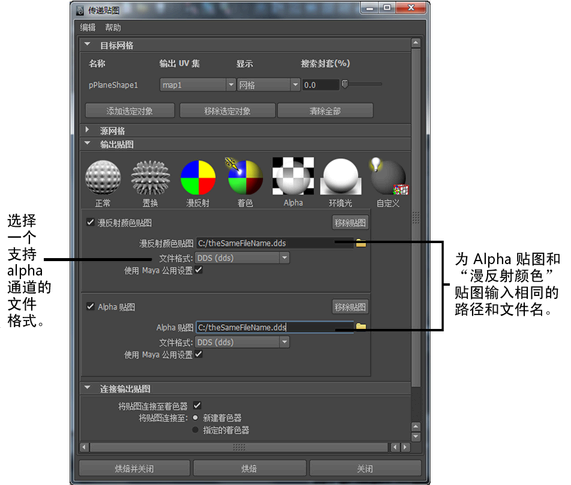

使用“传递贴图”(Transfer Maps)编辑器来创建各种类型的纹理贴图。有关详细信息，请参见传递贴图。
- 所有“传递贴图”(Transfer Maps)编辑器目标对象必须具有清晰、不重叠的 UV。
- 不支持将 NURBS 曲面和细分曲面作为源网格或目标网格。“传递贴图”(Transfer Maps)编辑器只能为多边形几何体生成纹理贴图。
- 默认情况下，如果将多个目标对象加载到“传递贴图”(Transfer Maps)编辑器中，则会为所有目标生成一个贴图。但是，如果希望为每个目标对象创建单独的贴图，则需要单独为每个目标执行“传递贴图”(Transfer Maps)烘焙操作。
- 可以使用显示层或快速选择集，以分离并保持跟踪源网格和目标网格。
- 可以使用文件引用，以将高分辨率的几何体引入要用作源网格的场景。
有关“传递贴图”(Transfer Maps)编辑器选项的描述，请参见照明/着色 > 传递贴图(Lighting/Shading > Transfer Maps)。
创建某个对象的网格属性的贴图，然后将该贴图烘焙到另一个对象上
- 选择照明/着色 > 传递贴图(Lighting/Shading > Transfer Maps)。
此时将显示“传递贴图”(Transfer Maps)窗口。
- 在场景视图中，选择要作为目标的对象。该对象就是要将纹理贴图烘焙到的对象。
- 在“传递贴图”(Transfer Maps)编辑器的“目标网格”(Target Meshes)部分中，单击“添加选定对象”(Add Selected)按钮。
在场景视图中选择的对象现在是对象传递贴图操作的当前目标。
- 在场景视图中，选择要作为源的对象。该对象就是要为其创建纹理贴图的具有网格属性的对象。
- 在“传递贴图”(Transfer Maps)编辑器的“源网格”(Source Meshes)部分中，单击“添加选定对象”(Add Selected)按钮。
在场景视图中选择的对象现在是传递贴图操作的源网格。默认情况下，场景中所有未选定的网格都将加载为源网格。
提示：该过程的快捷方式是：先选择要作为目标的对象，然后选择照明/着色 > 传递贴图(Lighting/Shading > Transfer Maps)。这样，选定的对象会自动列在“传递贴图”(Transfer Maps)编辑器的“目标网格”(Target Meshes)部分中。场景中其他所有未选定的网格也会自动加载为源网格。
- 从图标列表中，选择创建纹理贴图时要生成的输出贴图类型，并单击相应图标。
请参见输出贴图。
- 设定每个纹理贴图的输出选项。
如果要创建多个相同宽度和高度的贴图，您可以在“传递贴图”(Transfer Maps)窗口的“Maya 公用输出”(Maya Common Output)区域中输入这些设置以重用。
否则，如果针对纹理贴图取消选中“使用 Maya 公用设置”(Use Maya common settings)选项，则“贴图宽度”(Map width)和“贴图高度”(Map height)属性将显示在用户当前正在处理的纹理贴图区域中。
请参见Maya 公用输出。
- 选择下列选项之一：
- 如果要生成纹理贴图，然后关闭“传递贴图”(Transfer Maps)编辑器，请单击“烘焙并关闭”(Bake and Close)。
- 单击“烘焙”(Bake)生成纹理贴图，并使“传递贴图”(Transfer Maps)窗口保持打开状态。
- 单击“关闭”(Close)放弃对“传递贴图”(Transfer Maps)编辑器设置所做的任何更改。
使用“传递贴图”(Transfer Maps)编辑器的默认设置创建法线贴图
- 将源网格和目标网格加载到新的 Maya 场景中。
- 确保源网格和目标网格在场景视图中相互重叠。
- 在场景视图中选择目标网格。
- 选择照明/着色 > 传递贴图(Lighting/Shading > Transfer Maps)。
选择的网格将自动加载为“目标”，且场景视图中的所有其他网格将加载为“源”。
- 在“输出贴图”(Output Maps)部分中，单击图标列表中的“法线”(Normal)来创建“法线”(Normal)贴图。
- 在“法线”(Normal)贴图部分中设定以下属性：
- 文件名（“法线贴图”(Normal map)字段）
该属性将确定纹理贴图文件的名称以及贴图保存的位置。
- 文件格式(File format)
该属性将确定生成的法线贴图的文件格式。
- 贴图空间(Map Space)
选择“切线空间”(Tangent Space)。
- 选中“使用 Maya 公用设置”(Use Maya common settings)选项，以便可以在创建多个具有相同宽度和高度的贴图时共享和重用这些设置。
- 滚动到“Maya 公用输出”(Maya Common Output)部分并展开该部分，以设定公用贴图属性。设定以下选项：
- “贴图宽度”(Map width)和“贴图高度”(Map height)
该操作指定纹理贴图的分辨率。
注：Maya 场景视图仅支持切线空间贴图，且这些贴图仅在“高质量渲染”(High Quality Rendering)模式下才在该场景视图中可见。
- 选择中等“采样质量”(Sampling Quality)。
- 在“传入”(Transfer in)中选择“世界空间”(World Space)。
- 保留其余选项的默认设置。
- 滚动到“连接输出贴图”(Connect Output Maps)部分来指定要创建的纹理贴图如何链接到目标网格。要查看 Maya 内部的纹理贴图结果，请启用“将贴图连接至”(Connect maps to)：“新建着色器”(New shader) /“将贴图连接至”(Connect maps to):“指定的着色器”(Assigned shader)。
- 烘焙法线贴图。
- 可以使用显示层或快速选择集，以分离并保持跟踪源网格和目标网格。
- 可以使用文件引用，以将高分辨率的几何体引入要用作源网格的场景。
创建左手切线空间法线贴图
- 为了创建左手切线空间法线贴图，必须执行下列操作：
- 打开目标网格的形状节点所对应的“属性编辑器”(Attribute Editor)。
- 展开“切线空间”(Tangent Space)部分，然后选择“坐标系”(Coordinate System)下的“左手”(Left Handed)。
有关左手切线空间的详细信息，请参见切线空间(Tangent Space)。
生成高级法线贴图
创建自定义搜索封套
- 选择照明/着色 > 传递贴图(Lighting/Shading > Transfer Maps)。
此时“传递贴图”(Transfer Maps)编辑器将显示在场景视图中。
- 在场景视图中，选择要定义为自定义搜索封套的多边形网格。
- 在“目标网格”(Target Meshes)部分中，单击“添加选定对象”(Add Selected)。
所选网格将作为目标网格加载到“传递贴图”(Transfer Maps)编辑器中。
-
 )，然后从显示的上下文菜单中选择“使用当前选择作为封套”(Use Selection as Envelope)。
)，然后从显示的上下文菜单中选择“使用当前选择作为封套”(Use Selection as Envelope)。 选定的多边形网格现在为“传递贴图”(Transfer Maps)操作的搜索封套。
使用 Alpha 通道创建纹理贴图
- 通过“传递贴图”可将任何标量输出（例如，Alpha 或置换）打包到用于向量输出（例如，颜色或法线）的纹理贴图的 Alpha 通道中。因此，例如，可以创建带有 Alpha 的颜色贴图或带有置换的法线贴图，或带有置换的颜色贴图等。
- 选择支持 Alpha 通道的文件格式（例如，.dds、.exr、.tif）。
- 将相同的路径和文件名输入到要组合成一个纹理贴图的两个输出中。路径和文件名都区分大小写。
- 烘焙贴图。 注：
如果启用“将贴图连接至着色器”(Connect maps to shader)选项，Maya 会尝试将组合的贴图连接到着色器。但是，使用该方法生成的许多组合贴图需要使用自定义（硬件）着色器才能在场景视图中正确显示。
